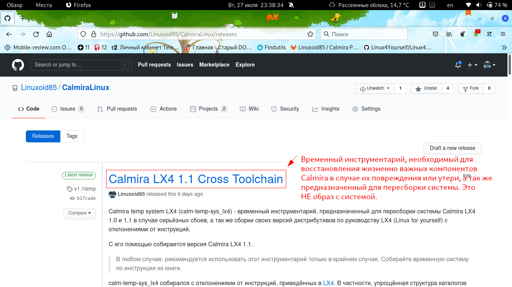
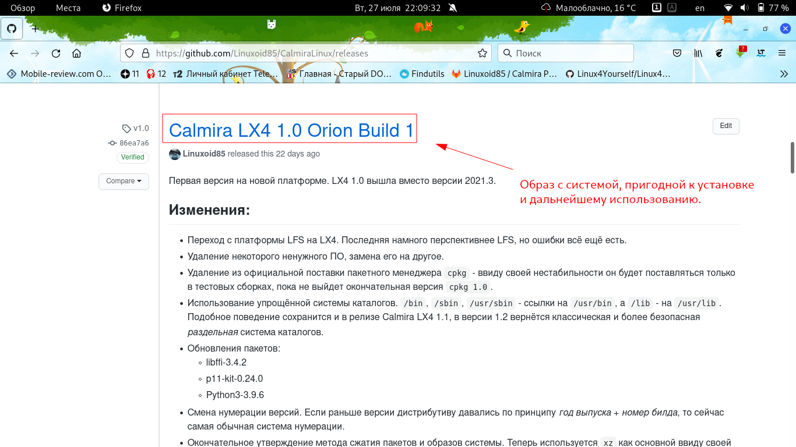
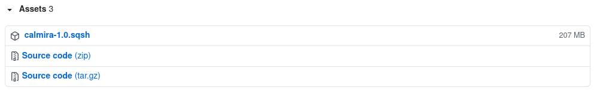

| Установка Calmira GNU/Linux | ||
|---|---|---|
| Назад | Домой | Далее |
| Распаковка дистрибутива |
На главной странице приведён раздел загрузок, но там приведены последние версии системы. А пользователь вправе выбирать нужную только ему.
Все релизы находятся в разделе Releases. Здесь выложены как образы самой системы, так и временные инструменты для пересборки или восстановления Calmira GNU/Linux. Распознать одно от другого просто - у временного инструментария в заголовке написано "Calmira $VERSION Cross Toolchain". Это архивы с временным инструментарием (кросс-компилятором и другими инструментами, необходимыми для восстановления или пересборки системы). ЭТО НЕ ЗАГРУЗОЧНЫЕ СИСТЕМЫ!

Всё остальное же - образы с системой. Вам следует скачать образ sqsh. Впоследствии, он будет распакован, а данные из него будут скопированы на определённый раздел жёсткого диска. Архивы zip и tar, подписанные как "Source code" являются копией данных из репозитория. Вам следует скачивать образ sqsh.

Нужные файлы, описанные в предыдущем параграфе, находятся в разделе "Assests":

| Назад | Домой | Далее |
| История развития Calmira GNU/Linux | Распаковка дистрибутива |